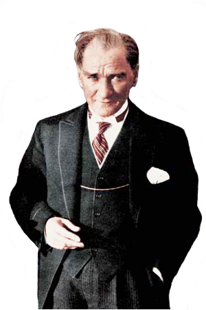

As the president of the newly formed Turkish Republic, Atatürk initiated a rigorous program of political, economic, and cultural reforms with the ultimate aim of building a modern, progressive, and secular nation-state. He made primary education free and compulsory, opening thousands of new schools all over the country. He also introduced the Latin-based Turkish alphabet, replacing the old Ottoman Turkish alphabet. Turkish women received equal civil and political rights during Atatürk's presidency ahead of many Western countries. In particular, women were given voting rights in local elections by Act no. 1580 on 3 April 1930 and a few years later, in 1934, full universal suffrage, earlier than most other countries in the world.

His government carried out a policy of Turkicisation trying to create a homogeneous and unified nation. Under Atatürk, non-Turkish minorities were pressured to speak Turkish in public, non-Turkish toponyms and last names of minorities had to be changed to Turkish renditions. The Turkish Parliament granted him the surname Atatürk in 1934, which means "Father of the Turks", in recognition of the role he played in building the modern Turkish Republic. He died on 10 November 1938 at the age of 57 in Dolmabahçe Palace; he was succeeded as President by his long-time Prime Minister İsmet İnönü and was honored with a state funeral. In 1953, his iconic mausoleum was built and opened, which is surrounded by a park called the Peace Park in honor of his famous expression "Peace at Home, Peace in the World".
In 1981, the centennial of Atatürk's birth, his memory was honoured by the UN and UNESCO, which declared it The Atatürk Year in the World and adopted the Resolution on the Atatürk Centennial, describing him as "the leader of the first struggle given against colonialism and imperialism" and a "remarkable promoter of the sense of understanding between peoples and durable peace between the nations of the world and that he worked all his life for the development of harmony and cooperation between peoples without distinction". Atatürk is commemorated by many memorials throughout Turkey and numerous countries all over the world, where place names are named in honor of him. Eleftherios Venizelos, former Prime Minister of Greece, forwarded Atatürk's name for the 1934 Nobel Peace Prize.